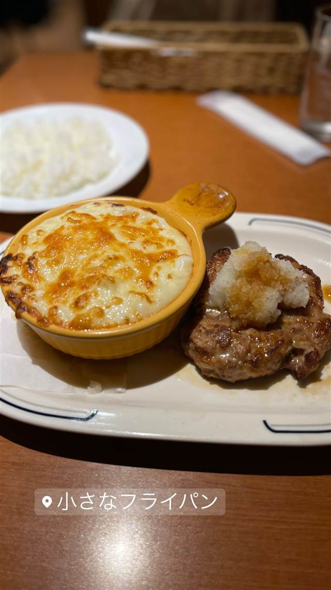

ちいさなフライパン
生クリーム不使用のあっさりベシャメルで作る自家製グラタン
小さなフライパン
武蔵小山の商店街近くにある老舗洋食店。生クリームを使わないあっさりベシャメルで仕上げる自家製グラタンが看板で、30年以上変わらぬ味を守り続けている。
TRIVIA
豆知識
- グラタンのメニューは25種類以上と豊富
- 生クリーム不使用のあっさりホワイトソースにこだわり続けている
REVIEWS
世間の評判
3.48食べログ
とろとろグラタンと行列必至
- とろとろのホワイトソースとたっぷりの具材のグラタンを評価する声が多い
- デミグラスソースがきいたハンバーグも評判で何を頼んでも外れないという声がある
- 開店前から行列ができるほどの人気で並ぶことが多いという声がある
- ランチはサラダやみそ汁が付いて値段以上とコスパを評価する声が多い
食べログ 口コミ321件
| 創業 | 開業年は不詳だが30年以上同じ味を守り続けているという情報あり。 |
|---|---|
| 看板 | 自家製グラタン（25種類以上）とハンバーグ。 |
| こだわり | 生クリームを使わず、牛乳とブイヨンで仕上げるあっさりしたベシャメルソースが特徴。 |
| 掲載・評価 | 「アド街ック天国」など複数のメディアで紹介された、武蔵小山を代表する人気洋食店。 |
| どこから | 23区の外れ・近郊 |
| 行くなら | 行列 |
| 営業時間 | 月 休み 火・水 11:30-15:00、17:00-22:00 木 11:30-15:00 金・土 11:30-15:00、17:00-22:00 日 11:30-15:00 |
| 予算 | 昼 ¥1,000～¥1,999 夜 ¥1,000～¥1,999 |
| 定休日 | 月曜 |
| 予約 | 予約不可 |
| 場所 | 武蔵小山駅 東京都品川区小山（武蔵小山駅徒歩4分） |
| メモ | 武蔵小山駅から徒歩4分。ハンバーグやカレーとのセットメニューも人気。 |
食べたもの：ハンバーグとグラタン
NEARBY
近い店・同じ系統の店
-
 ★
まぜそば・油そば 武蔵小山駅
麺恋処 爆龍（はぜりゅう）
動物系に味噌を効かせた濃厚醤油の中華そば
昼 ¥1,000～¥1,999 夜 ¥1,000～¥1,999
★
まぜそば・油そば 武蔵小山駅
麺恋処 爆龍（はぜりゅう）
動物系に味噌を効かせた濃厚醤油の中華そば
昼 ¥1,000～¥1,999 夜 ¥1,000～¥1,999
-
 ピザ 武蔵小山
La TRIPLETTA
開業10カ月でビブグルマンを獲得した本格ナポリピッツァ
夜 ¥4,000～¥4,999
ピザ 武蔵小山
La TRIPLETTA
開業10カ月でビブグルマンを獲得した本格ナポリピッツァ
夜 ¥4,000～¥4,999
-
 パスタ 武蔵小山
パスタ専門店 とすかーな 武蔵小山総本店
秘伝の醤油だれで仕上げる和風スパゲッティなど常時60種以上
昼 ¥1,000～¥1,999 夜 ¥1,000～¥1,999
パスタ 武蔵小山
パスタ専門店 とすかーな 武蔵小山総本店
秘伝の醤油だれで仕上げる和風スパゲッティなど常時60種以上
昼 ¥1,000～¥1,999 夜 ¥1,000～¥1,999
-
 ケーキ・パフェ 武蔵小山
パティスリィ ドゥ・ボン・クーフゥ 武蔵小山本店
月替わりパルフェは完全予約制のイートイン限定で持ち帰りができない
昼 ¥3,000～¥3,999 夜 ¥4,000～¥4,999
ケーキ・パフェ 武蔵小山
パティスリィ ドゥ・ボン・クーフゥ 武蔵小山本店
月替わりパルフェは完全予約制のイートイン限定で持ち帰りができない
昼 ¥3,000～¥3,999 夜 ¥4,000～¥4,999
-
 ケーキ・パフェ 武蔵小山
王様といちご（旧店名：王様とストロベリー）
高さ約60cm・重さ約3.5kgの巨大な王様パフェ
昼 ¥1,000～¥1,999 夜 ¥1,000～¥1,999
ケーキ・パフェ 武蔵小山
王様といちご（旧店名：王様とストロベリー）
高さ約60cm・重さ約3.5kgの巨大な王様パフェ
昼 ¥1,000～¥1,999 夜 ¥1,000～¥1,999
-
 バー 武蔵小山
SALVATORE CUOMO & BAR 武蔵小山
イタリアから輸入した薪窯で焼く400℃高温焼成のナポリピッツァ
昼 ¥1,000～¥1,999 夜 ¥3,000～¥3,999
バー 武蔵小山
SALVATORE CUOMO & BAR 武蔵小山
イタリアから輸入した薪窯で焼く400℃高温焼成のナポリピッツァ
昼 ¥1,000～¥1,999 夜 ¥3,000～¥3,999